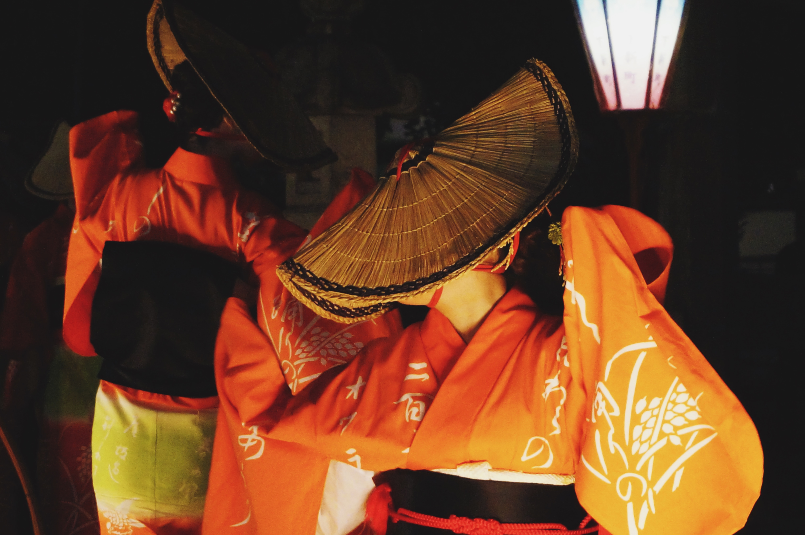

japón
| Sobre el país |
 |
- Historia
- Según la leyenda descrita en el Kojiki y en el Nihonshoki, Japón fue fundado en el siglo VII a.
C. por el emperador Jinmu. Durante los siglos V y VI, el sistema caligráfico chino y el budismo
fueron introducidos junto con otras costumbres chinas a través de la península coreana o
directamente desde China. Los emperadores fueron gobernantes oficiales, pero el verdadero poder
permanecía generalmente en manos de poderosas cortes nobles, regentes o shogunes (gobernadores
militares).
- Cultura
- La cultura japonesa ha evolucionado de manera considerable en los últimos años, desde el país
original de la cultura Jōmon a su cultura contemporánea, que combina las influencias de Asia,
Europa y Estados Unidos. Las artes tradicionales incluyen la artesanía (ikebana, origami,
ukiyo-e, muñecos, lacas, alfarería), actuaciones (bunraku, Kabuki, Noh, rakugo), tradiciones
(ceremonia del té, Budō, la arquitectura, los jardines, las espadas) y cocina.
- Gastronomía
- El sushi, uno de los platos más reconocidos de la gastronomía de Japón como cocina nacional ha
evolucionado en los siglos a causa de muchos cambios políticos y sociales. En la Edad Antigua la
mayoría de la cocina estaba influenciada por la cultura china. La cocina cambió con el
advenimiento de la Edad Media, que marcó el comienzo de un abandono del elitismo con la
normativa del shogunato. Al principio de la Edad Moderna ocurrieron grandes cambios que
introdujeron en Japón la cultura occidental.
|
Streetstyle
Pasear por las calles de Tokio implica, además de experimentar una inmensa felicidad, vigilar tus pasos para no
chocar con los millones de personas que pasean por sus calles mientras miras embobada los looks que lleva el
personal. Trabajar en moda y no traerse en la maleta un montón de valiosa información en forma de tendencias es,
literalmente, imposible: los códigos de vestimenta se repiten –así que son fáciles de asimilar– y los estilismos
parecen sacados del futuro.
Pero, ojo, porque la referencia al futuro no reside en la locura de los mismos, cosa que uno piensa cuando
todavía no ha puesto un pie en Japón. La conclusión que se saca a las pocas horas de pasear por los barrios de
Shibuya, Shinjuku y Harajuku –y por Dover Street Market Ginza, claro– es que los japoneses, y especialmente los
tokiotas, tienen una sutileza y elegancia a la hora de hacer sus estilismos que resulta pasmosa, como de otro
planeta, como de muchos años de evolución.
De todas las prendas, accesorios, marcas y combinaciones estilísticas que han visto nuestros ojos –y de muchas
visitas a los santuarios y templos, en este caso, de la moda–, hemos extraído 10 tendencias vistas en Japón que
podemos (y queremos) introducir en nuestro look diario desde ya. Desde su predilección por el color camel a las
siluetas anchas que declaran la muerte del pitillo, pasando por el uso masivo (y confirmación absoluta) de dos
accesorios que ya están por todas partes. Big (trends) in Japan!

| Ciudades |
|
|
Actividades
- Visitar Harajuku
- Viajar en metro
- Probar comida callejera (¡como sushi!)
- Entrar al Museo de Arte Digital
- Subir al Skytree
- Monte Fuji
- Robot Restaurant
|
|
|
Actividades
- El acuario Kaiyukan
- Comer en un local de comida callejera
- Entrar al observatorio Abeno Harukas
- ¡Conocer Legoland!
- Conocer Universa Studios Japón
- Ver la puesta de sol en el Umeda Sky Building
- Conocer el Castillo de Osaka <3
|
Video